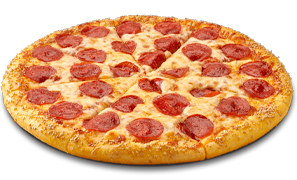

Simply satisfying the appetite of a human is the key importance of pizza. With its many choices of crust flavorings and toppings, pizza is a meal that everyone will enjoy. Also a large group of individuals can easily be served. The most popular food served is pizza when parties and get-togethers are held for any occasion, because it's so easy to eat! Many pizzerias are located throughout the country, so ordering pizzas and eating them right out of the box is really convenient. For centuries now, pizza has become one of the most popular foods in the world, and because of its wonderful taste and significance to the world of food, it will continue to be.
Because of the sheer number of Italian immigrants, Pizza became as popular as it did in part: they made up 4 million of the 20 million immigrants who came to the U.S. between 1880 and 1920. They brought along their taste buds and pizza-making abilities with them.
